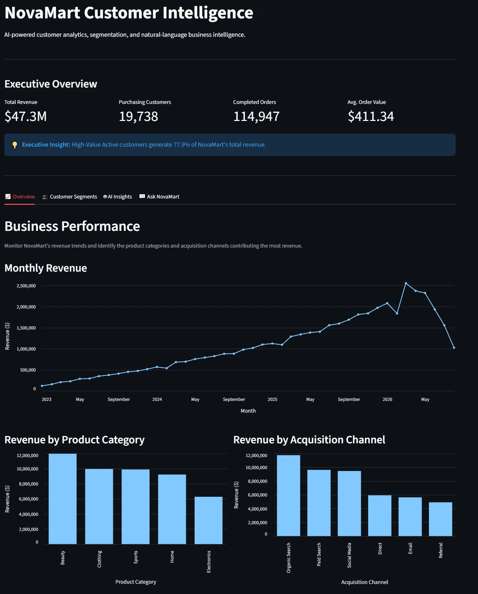
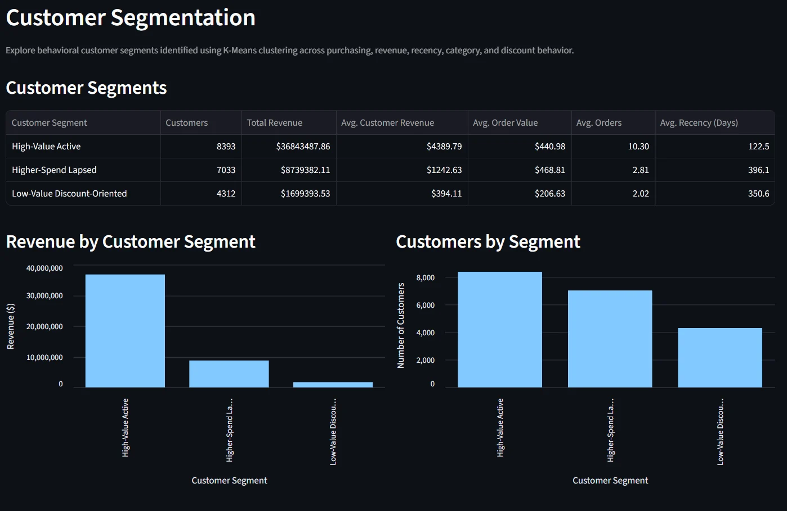

Understand the problem.
Start with the business question. Define the decision, relevant KPIs, and what meaningful evidence would look like.
BUSINESS FRAMING · KPI DESIGNI'm Arib Khan, a business-focused data analyst who connects technical analysis with the questions that matter to businesses.

How I turned a synthetic e-commerce dataset into customer segments, decision-ready insights, and an AI-assisted analytics experience.

Built a cloud-to-dashboard analytics workflow to uncover how purchasing behaviour differs across customers — and what a business could do with those differences.
A strong analysis doesn't end with a chart. It asks a better question, checks the evidence, and turns the answer into something people can act on.
Start with the business question. Define the decision, relevant KPIs, and what meaningful evidence would look like.
BUSINESS FRAMING · KPI DESIGNPrepare data, build repeatable analyses, evaluate model choices, and make assumptions visible rather than burying them.
PYTHON · SQL · BIGQUERYTranslate results into clear findings, visual stories, and practical hypotheses a team can test.
VISUALIZATION · BUSINESS STRATEGYI'm a Business Analytics graduate from Oregon State University, with experience translating client needs and performance data into practical digital solutions.
My background spans customer-facing discovery, reporting, digital marketing analytics, and project delivery. I enjoy working at the intersection of people, processes, and data — where analysis becomes a better way to make decisions.
Client-facing experience shaped how I think about analytics: the goal isn't simply to produce a report, but to solve the right problem.
Business analysis · Digital analytics · Client solutions
Combined requirements discovery, analytics, and digital solution delivery; contributed to acquiring five clients worth over $15,000 in project value.
Business development · Customer needs analysis
Researched and qualified prospects, led client conversations, and helped secure more than 15 clients for website solutions.
I'm interested in Data Analyst and Business Analyst roles where technical problem-solving and business thinking come together.